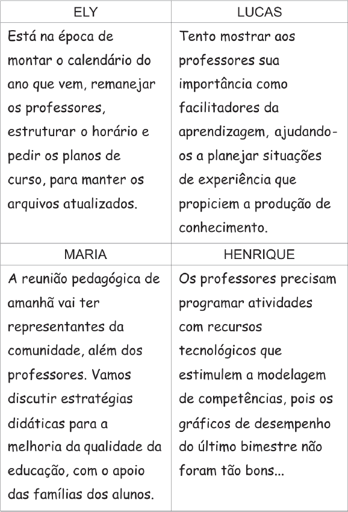

Considere os depoimentos para responder à questão.

Qual das afirmações abaixo analisa corretamente um ou mais
dos depoimentos desses coordenadores pedagógicos?
-
Lucas e Henrique possuem uma concepção de coordenação
proveniente da pedagogia renovada, já que
enfatizam um posicionamento crítico, voltado às questões
sociais.
-
Lucas e Ely demonstram ser técnicos normatizadores,
pois seus procedimentos estão voltados à manutenção
da ordem e às questões administrativas.
-
A visão de Ely sobre coordenação pedagógica está calcada
em um modelo de gestão técnico-científico, pois se preocupa
com o desenvolvimento profissional dos docentes.
-
A atividade proposta por Maria reflete um modelo de gestão
participativa, na medida em que corresponde a uma
prática passível de ser controlada em detalhes.
-
O depoimento de Henrique revela uma visão de coordenação
que privilegia a técnica, voltada para o controle do comportamento,
para o desempenho e para os resultados.